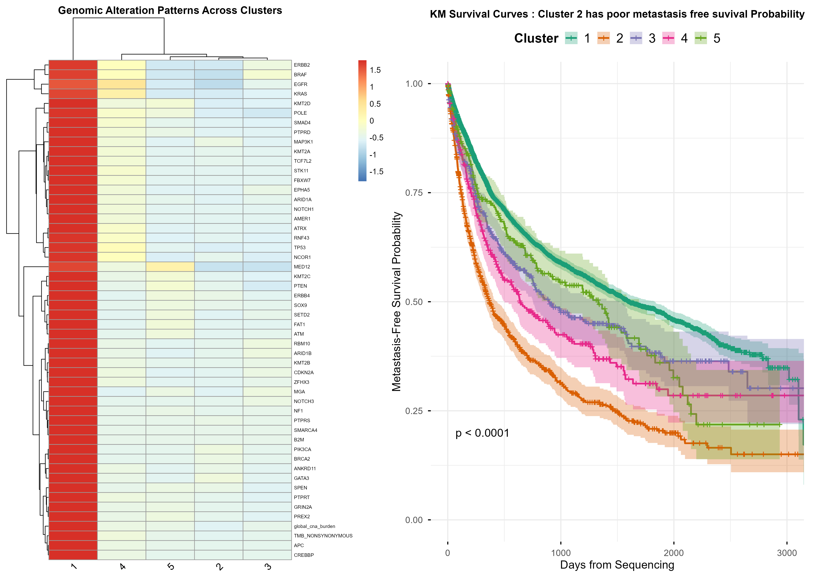
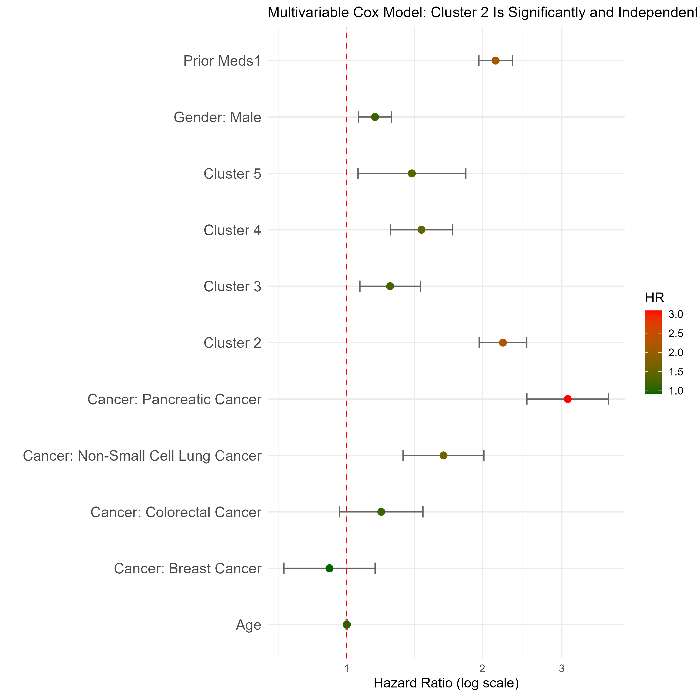
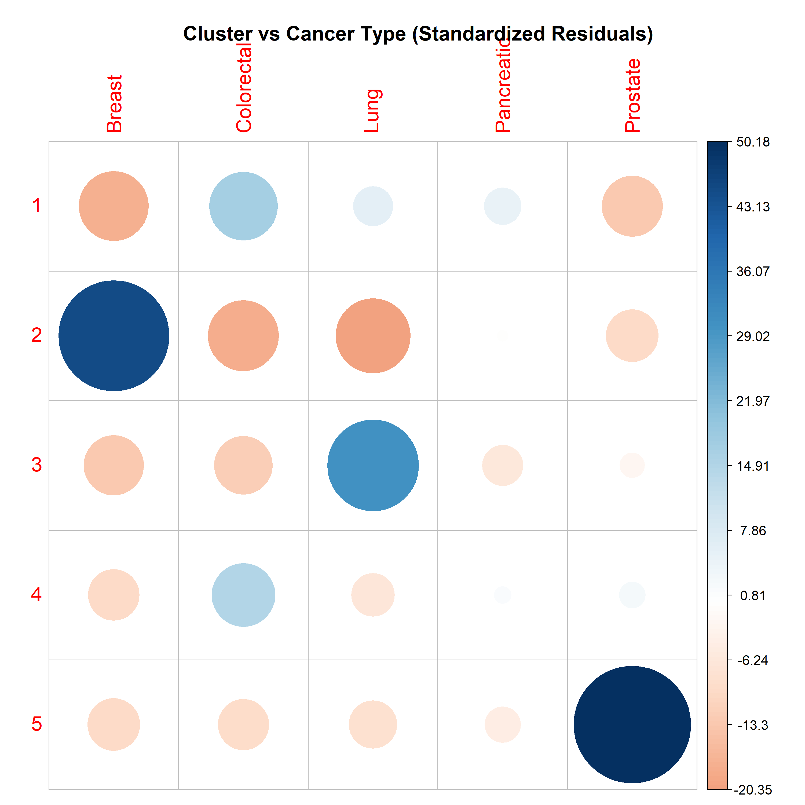
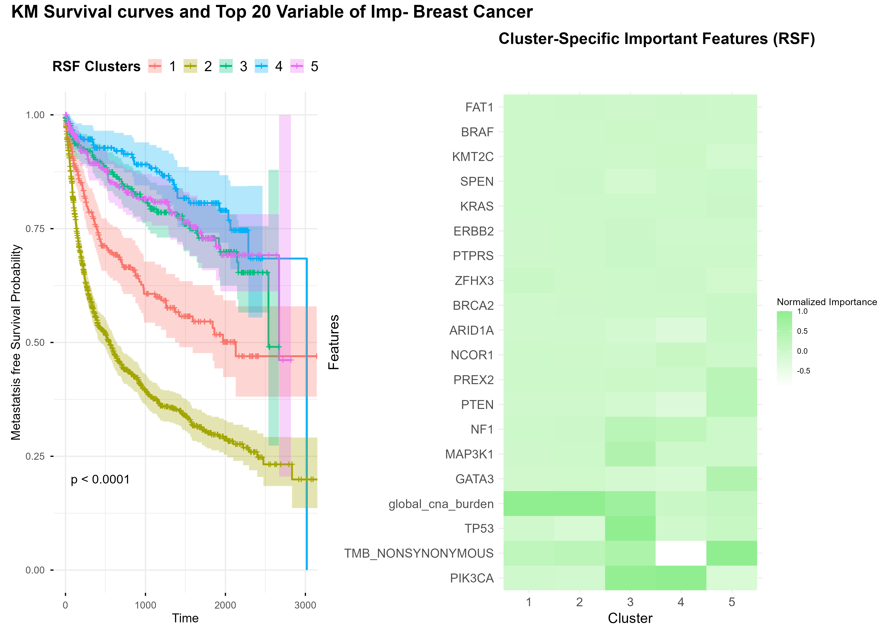

About
The Challenge: Determining when and how cancer will metastasize remains one of the greatest hurdles in modern oncology. Traditional clinical staging often overlooks the subtle underlying genomic signals that drive aggressive disease progression. This gap in knowledge can lead to both over-treatment of indolent cases and under-treatment of high-risk ones.
The Goal: The objective of this study is to identify genomic subtypes associated with metastatic risk and evaluate their prognostic relevance using survival analysis
The Approach : We developed an advanced machine learning framework specifically designed to analyze time-to-metastasis outcomes in non-metastatic solid tumor patients.By integrating primary tumor features including gene mutations, Tumor Mutational Burden (TMB), and Copy Number Alteration (CNA) burden with clinical timelines, we aim to evaluate the true prognostic relevance of a patient's genetic profile.
Our primary outcome was time to metastasis (TTM) measured from the date of genomic sequencing. We included patients with non-metastatic solid tumors at baseline with available genomic and clinical data, and excluded those with documented metastasis prior to or at sequencing, Stage IV or distant metastatic disease at baseline, progression at or before sequencing, no post-sequencing follow-up time, or incomplete genomic or outcome data.
Methods
We fit a Random Survival Forest (RSF) model with the following covariates: gene-level mutation indicators, tumor mutational burden (TMB), global copy number alteration (CNA) burden and primary cancer type. Analysis was performed in R using the randomForestSRC and survival packages.
- Primary outcome: Time to metastasis (TTM)
- Model: Random Survival Forest (1,000 trees)
- Covariates: Gene-level mutations, TMB, CNA burden, Cancer Type
- Software: R 4.4.2
Results
Integrated Genomic Landscape and Metastasis-Free Survival by Clusters, with Cluster 1 exhibiting high mutation burden and genomic instability,and Cluster 2 displaying poor metastasis-free survival probability

Multivariate Risk Assessment - Cluster2 significantly and independently predicts MFS (Vs Cluster1)

Tissue-Specific Cluster Enrichment - cluster2 (Breast cancer enriched) and Cluster5(Prostate cancer enriched)

Survival Analysis and Feature Importance for Breast Cancer Stratification - Cluster2 has poor Metastsis free survival proability

Team
- Indhira Vadivel · University of Michigan